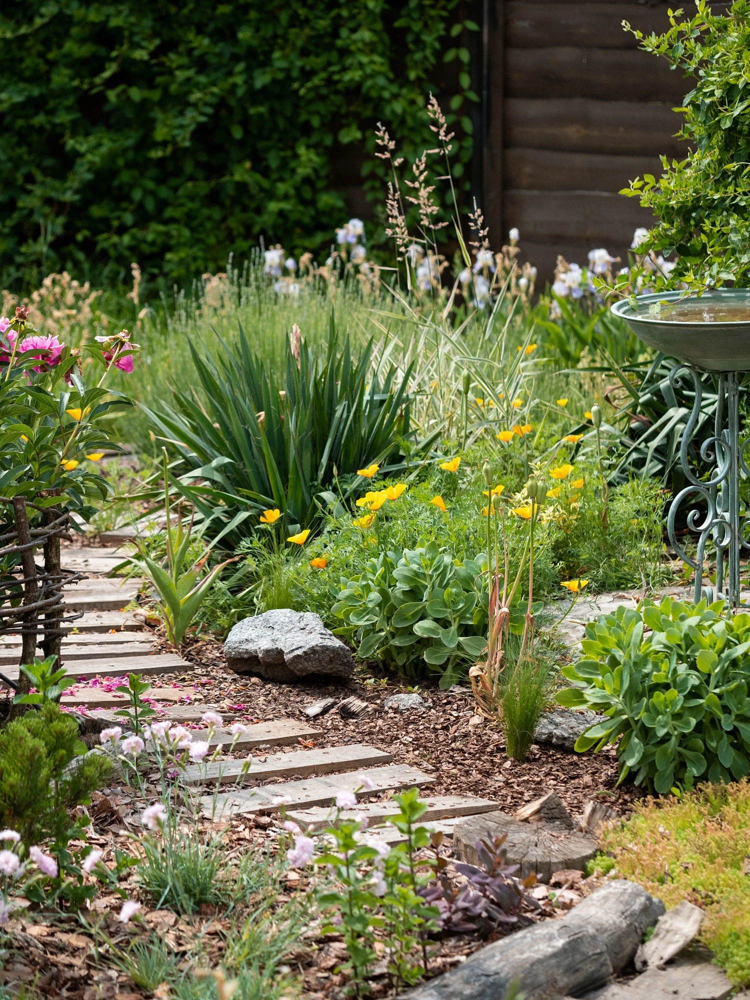
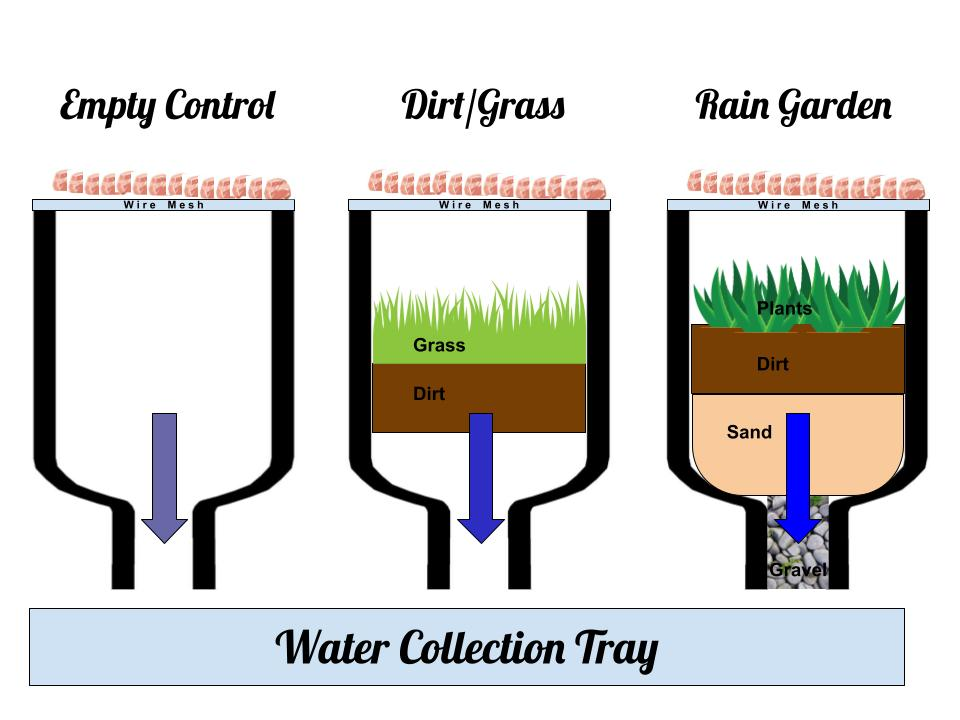

☔
01Rain falls
Water lands on roofs, walkways, fields, and pavement around a school.
Slow runoff. Grow biodiversity.
Rainwater rushing across hard surfaces can carry pollution toward local waterways. Team Tacocat is designing a rain garden for our school: a planted place where runoff can slow down and soak into the ground.
Learn in the Classroom →
On pavement, rain cannot soak in easily. It becomes stormwater runoff, carrying soil, litter, fertilizer, and other materials downhill. The team began with water quality research, then chose a hands-on idea that could address runoff closer to its source.
Water lands on roofs, walkways, fields, and pavement around a school.
Hard surfaces send more water downhill instead of letting it enter soil.
Moving water can pick up sediment, litter, nutrients, and road salt.
A well-planned garden can make room for native plants and local wildlife.
A shallow planted area that receives runoff. Its soil and plants give water a place to slow down and soak in. Site conditions, drainage, and plant choice all affect how well it works.
Choose a place where rainwater can flow into the garden.
A shallow basin gives moving water room to spread out.
Suitable soil allows water to infiltrate between storms.
Native plants can provide food and shelter for local wildlife.
The proposed garden has not been built. The team still needs to test the model, check a location, and select appropriate plants.
The notebook proposes comparing an empty control, a grass-and-soil model, and a layered rain-garden model with plants, soil, sand, and gravel. Water collected beneath each model could be compared to see what the setups do differently.
This is a draft comparison. We will share measured results only after testing is documented.

The team is exploring possible school locations, garden size, native plants, drainage, materials, and how to explain the project to visitors. A full garden remains a proposal while those details are checked.
Six short decisions about runoff, testing, safety, and habitat. Retry as often as you like.
Use evidence to make the next design decision.
Each attempt draws 10 random questions from our student science bank. Read each explanation, then try again for a new mix.
Progress lasts for this visit. Finish a challenge to earn a badge; earn a perfect score to create a certificate. Retries are unlimited.
Complete a 10-question quiz round.
Locked · Finish the quizWork through six design cases.
Locked · Finish every caseEarn 6/6 to unlock.
Earn 10/10 to unlock.
Team Tacocat is FIRST LEGO League team #34043. We use research, robotics, engineering, and teamwork to tackle real-world problems. For the BIOGLOW season, our Innovation Project is a proposed school rain garden that could reduce runoff and make room for native plants.
Notice where rain flows, keep litter out of drains, learn about native plants, and share ideas with your community.
Notice which surfaces let water soak in.
Dispose of litter properly.
Learn which native plants suit your area.
Compare evidence before deciding what works.
Explain how rain gardens can manage runoff.